En esta lección se explica cómo utilizar algunas de las herramientas de Eclipse for PHP developers (Eclipse PHP).
Aplicar estilo PSR-2
Eclipse PHP formatea el código de acuerdo con las recomendaciones de estilo PSR-2.
Se puede formatear todo el programa o solamente una parte (seleccionando la parte a formatear) ...
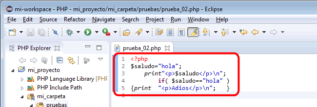
... mediante el menú Source > Format ...
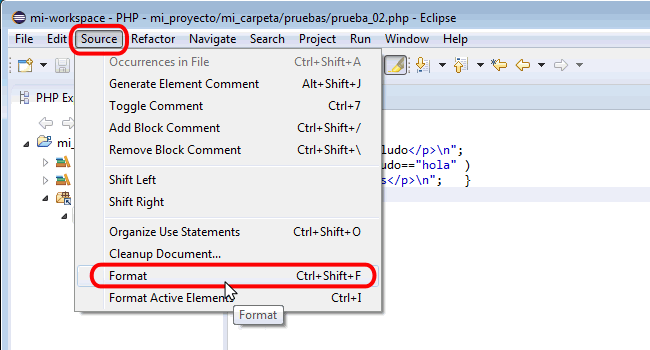
... y automáticamente el código se formateará de acuerdo con las recomendaciones de estilo PSR-2:
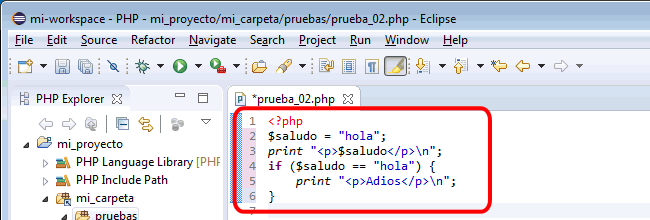
Si no se tiene la costumbre de utilizar el formato PSR-2, se recomienda formatear todos los programas para familiarizarse con el estilo. Con un poco de práctica se interiorizará el estilo y se aplicará espontáneamente.
Pegar código HTML en archivo PHP
Al pegar código HTML copiado del navegador en un archivo PHP, hay que tener cuidado para no perder el sangrado del código HTML original:
Si se pega en un fragmento PHP, el sangrado se pierde:
Si se pega en la misma línea que la etiqueta de apertura de un fragmento PHP, el sangrado también se pierde:
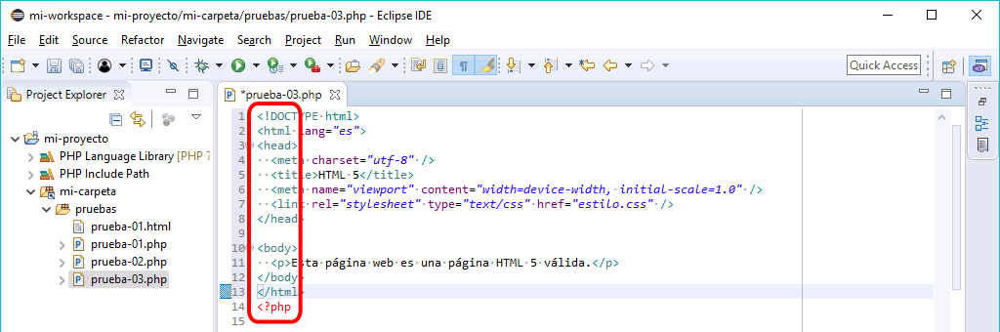
Pero si se pega fuera de un fragmento PHP, el sangrado se conserva:
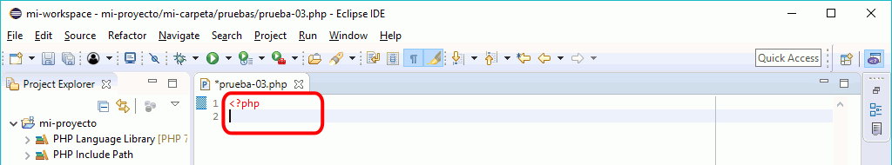
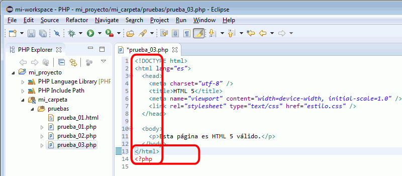
O si se pega en una instrucción print, el sangrado se conserva (los errores que se muestran en la imagen siguiente son debidos a las comillas que forman parte del código fuente HTML):
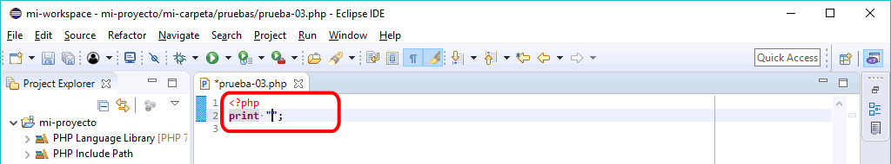
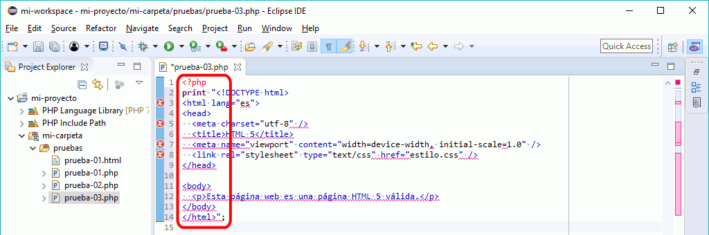
Sustituir las comillas en el código HTML pegado
Al pegar código HTML en un print, las comillas incluidas en el código HTML pegado provocan errores de sintaxis que se deben corregir cambiando las comillas dobles por el carácter especial \".
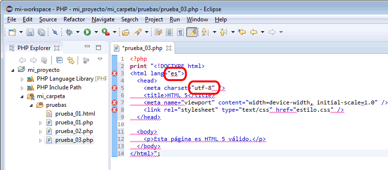
La forma más rápida de corregirlos consiste en seleccionar las líneas de código HTML ...
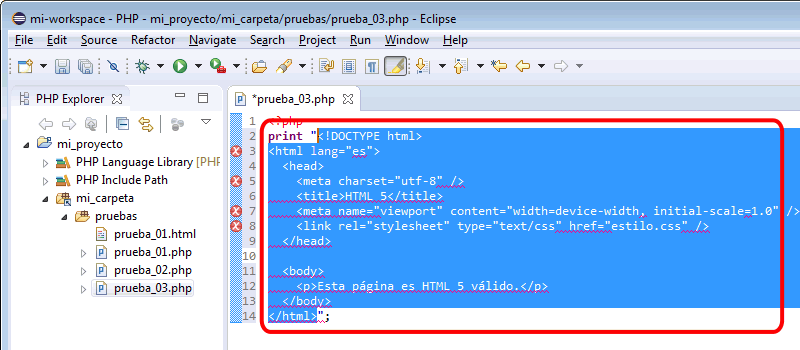
... y abrir el menú Edit > Find/Replace (o mediante el atajo Ctrl+F). En la ventana Find/Replace hay que buscar el carácter " para sustituirlo por el carácter \":
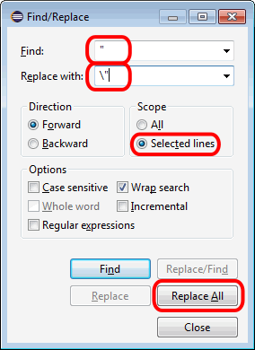
Al hacer clic en el botón "Replace All", se sustituirán las comillas. El problema es que las comillas que delimitan la cadena también se sustituyen, lo que también es un error de sintaxis:
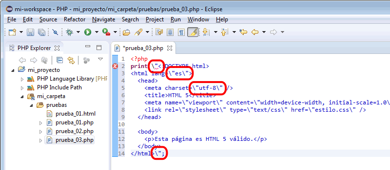
Esas contrabarras sobrantes se pueden borrar manualmente:
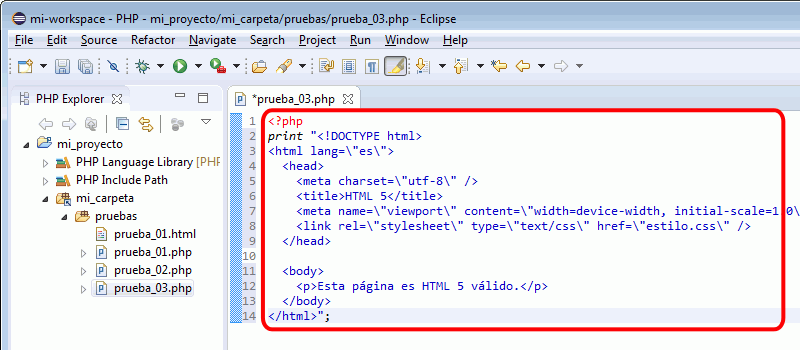
Aumentar o reducir el sangrado
Para aumentar el sangrado de una o varias líneas se puede seleccionar las líneas y ...
teclear el carácter tabulador, o ...
elegir el menú Edit > Shift Right
Para reducir el sangrado de una o varias líneas se puede seleccionar las líneas y ...